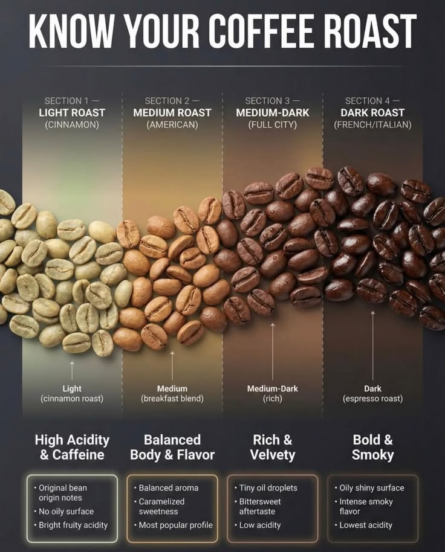

Cherry picked at the farm
We buy from smallholder cooperatives in the Rwenzori, Elgon, West Nile, and Central regions. Pickers select only the ripest red cherries by hand, often over several passes through the same tree.
Cherry to cup
From the moment a ripe cherry is picked on a Ugandan hillside to the moment a roasted bag ships from our U.S. roastery — here's every stage, plus a full guide to roast levels and brew methods so you know exactly what you're buying.
We buy from smallholder cooperatives in the Rwenzori, Elgon, West Nile, and Central regions. Pickers select only the ripest red cherries by hand, often over several passes through the same tree.

Arabica lots are pulped, fermented, washed, and sun-dried on raised beds; Robusta is processed to the standard each region is known for, then rested until moisture levels are stable.

Green, unroasted beans are sorted by size and density, graded for defects, bagged, and shipped by sea to the United States — the form coffee travels and keeps best in.

We roast in short runs at our Waltham, Massachusetts roastery so a bag is never more than two weeks from the roaster before it ships — you can track the roast date printed on every bag.

Flat-rate shipping across the lower 48, with standing weekly routes for wholesale and café accounts. Reserve a spot on the next shipment below.
Want the full story behind the company and the two addresses this route runs between?
Read our routeKnow your roast
Every lot we sell can be taken from light to dark. Roast level changes acidity, body, and sweetness far more than origin alone — here's what to expect from each.
High acidity and caffeine, with the bean's original origin notes still intact. No oily surface.
Our most popular profile — balanced aroma with caramelized sweetness starting to build.
Rich and velvety with the first tiny oil droplets appearing on the bean and a bittersweet aftertaste.
Bold and smoky with an oily, shiny bean surface — the lowest acidity of the four, built for espresso.

Brew it your way
Grind size matters as much as roast. Here's what we recommend for each way of brewing.
Best for espresso machines. Pairs well with our medium-dark and dark roasts.
Smooth and balanced. Our most forgiving brew method for any roast level.
Full-bodied and smooth. Great with medium and medium-dark roasts.
Best for highlighting light roasts and single-origin lots like Kanungu Peaberry.